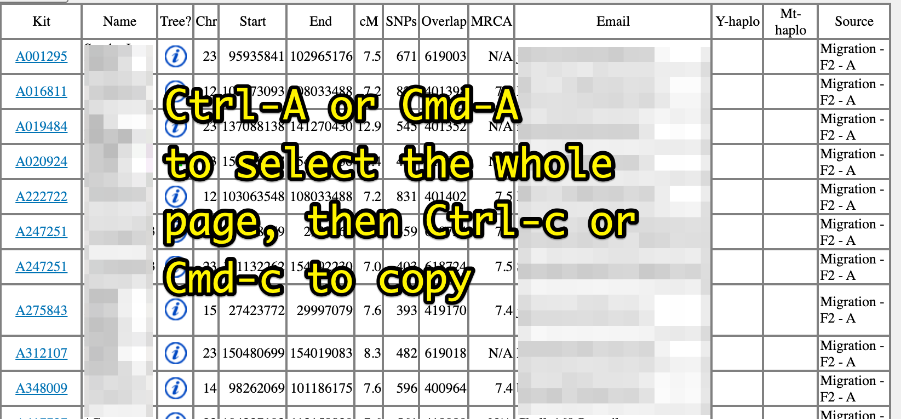

Gedmatch kit Mayflower Ancestor Interrogator (Beta)
Go to GEDmatch and generate a match report from the Mayflower Ancestors Proven and Unproven Project with your kit number. Your results page will look like the image below.
Paste the entire results page into the box above and hit submit (BETA LIMIT: UNLESS you match more than 100 kits -- just paste up to 100 rows in that case). You'll get a page with the kit numbers you match and the passenger names that they've listed as their possible ancestors. The source for this information is the spreadsheet of kit numbers and passenger associations for the GEDmatch Mayflower Ancestors (Proven and Unproven) Project on GEDmatch.
